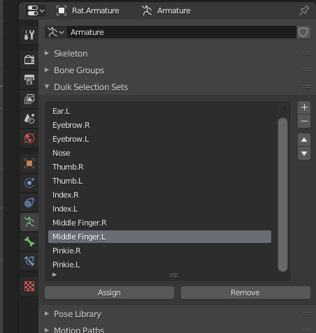

Selection sets
Manage
Properties Panel ‣ Armature Data Tab ‣ Duik Selection Sets
With Duik, you can easily create selection sets on your armatures.
In the Armature data tab of the Properties panel, you’ll find the Duik Selection Sets Panel.

Select some bones and click on the + button to create a selection set containing these bones.
Use the Assign and Remove buttons to assign or remove bones to and from the active selection set.
Use
3D View ‣ Sidebar ‣ Tool Tab ‣ Duik Selection Sets
When you have some selection sets, they will be available in the sidebar of the 3D View, in the Tool tab.

Duik will try to build a nice layout, depending on the names of the sets, and their order in the list. Each time an .R suffix followed by an .L suffix is found, the two sets are showed in a row.
Just click on the buttons to select all the bones contained in the corresponding selection set. This is very useful to quickly select and animate all FK controls of a finger for example.
Last Modified on